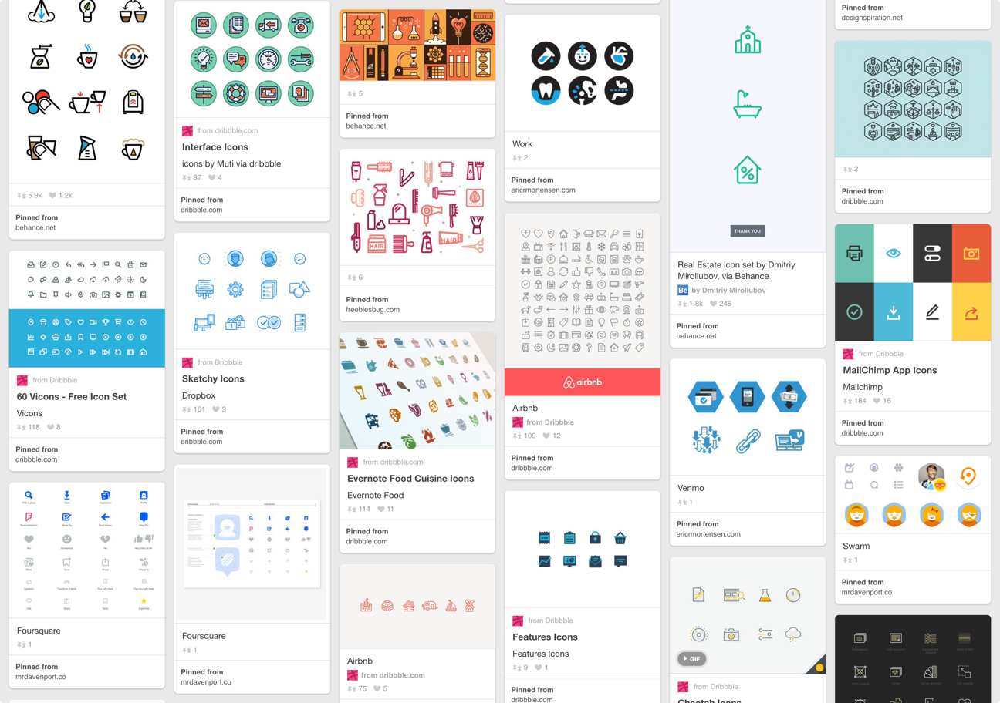

iOS Onboarding
Company
Clementine, a conference call and messaging app for enterprise. Acquired by Dropbox in 2015.
Role & Responsibilities
As one of two UI/UX designers, I designed the onboarding flow for our iOS app. The main goal was to craft the story of the Clementine experience while introducing new customers to four main features:
- A personal Clementine number for business calls
- Conference calling
- Secure voice and text communication
- Call recording and message archiving
Competitive Analysis
I pinpointed a few apps with onboarding flows that were great examples of the same high-level goal we wanted to achieve. Each product explained their complex interactions or features in a personable, interactive way.
What I noticed was that as the actual complexity of the app increased, the more its onboarding abstracted its features into simpler concepts.
Sam Hulick’s Onboarding Teardowns were also a great resource in gathering inspiration.

Designing for 3 Personas
Through interviews with current and potential customers, we developed three personas based on user roles and motivations in the context of Clementine.

The Employee
Typically a salesperson, the employee’s focus is on getting the job done with conference calls and messaging through a private business line.

The Chief Information/Compliance Officer
The CIO/CCO’s responsibility is approving an app that meets their company’s compliance, security, and archiving standards.
The IT Admin
The IT Admin is all about efficiency and ensuring business products can used in conjunction at their company. Their focus is on directory integration, app flexibility, and accounting.
Concepts & Sketching
I sketched out ideas to get feedback from the team to avoid letting high-fidelity visuals interfere with critique. I wanted to show as much of the illustrations and interactions as I could early in the process to save time during prototyping.
While sketching, I kept three things in mind:
- While Clementine is an enterprise product, it’s still consumer-facing. The language and tone should reflect that.
- Each of the highlighted features needs to shine and fit into the product story for each of our three personas.
- People progress through onboarding differently with different goals in mind, so the pacing of onboarding should be flexible.
Storyboards & Prototyping

In Sketch, I drew out storyboards for each screen of onboarding to provide a higher level of fidelity for the team for review. These helped finalize the features we wanted to highlight and made it clear which visuals, when transferred from paper to screen, needed iteration.
Storyboarding quickly made a few things clear. My idea for Screen 1 to convey how Clementine separates a customer’s work and personal life was too subtle. In iterating (see below), I kept increasing the contrast in this work-life separation until the final screen we settled on showed actual movement from work to home, instead of focusing solely on the phone.
On Screen 3, my initial animation concept to feature secure messaging would take too much time and attention to get to the point. Instead of an animaton sequence that would obscure text (see below), I reduced the spatial presence of the secure messaging lock icon, and instead relied on animation to bring attention to the feature.
As I was polishing up my designs in Sketch, I jumped into Framer to prototype initial animations and interactions to get feedback from the team and understand what was viable from an engineering perspective.

The final onboarding animation below was recorded from the Framer prototype.
Clementine’s New Onboarding

The Clementine story as told by onboarding starts from a high-level use case, targeting customers who need to separate their work and personal communications. As a customer swipes through onboarding, one specific feature is pinpointed per screen to keep attention focused.
In plotting out the story we wanted to tell in onboarding, I learned how important it is that the more complex the story, the more important it is to keep it simple and friendly. In the onboarding screens, you can also see that I leaned toward the mantra that no (or minimal) UI is the best UI. Very little of our actual UI is shown, and what is shown has been abstracted.
Looking forward, there’s still more to be done around nudging customers to pay subscription fees for the service. This payment prompt currently appears after signup, but a more seamless flow between new user onboarding and payment would be important for conversion.